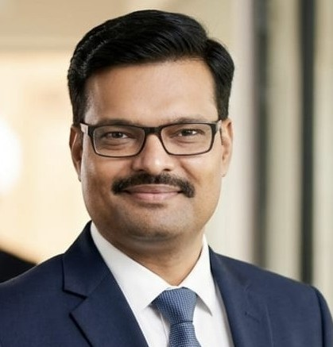

19+ years
Enterprise ERP and integration engineering experience.
Open to Remote / Hybrid / Contract - India, EMEA, APAC, ANZ
I bring 19+ years of experience modernizing enterprise systems across IBM i, DB2, Java, Apache Camel, and Azure Service Bus. I design resilient API-first integration platforms, stay hands-on with implementation, and lead delivery from architecture through go-live.
Enterprise ERP and integration engineering experience.
Delivered across logistics, warehousing, finance, and pharma.
Delivery improvement through reusable integration patterns.

About Me
I have supported IPTOR Supply Chain Systems, Sweden for 16+ years across two engagements. My work spans integration architecture, technical leadership, modernization of IBM i/DB2 landscapes, delivery governance across SIT, UAT, cutover, and production stabilization, and AI-assisted engineering adoption using GitHub Copilot and Claude Code.
Target Roles
Core Skills
API-first design, event-driven architecture, asynchronous messaging, resiliency and observability.
IBM i / AS400 and DB2 modernization using Java, Apache Camel, Quarkus, and Azure services.
Planning, quality gatekeeping, technical reviews, go-live cutover ownership, and stakeholder alignment.
Technology Stack
Java, SQL, RPG, ILE-RPG, CL/400, JavaScript, Node.js, ReactJS
Apache Camel, Quarkus, REST/SOAP APIs, Kafka, MQ, AS2, EDI, Netlang iPaaS
Azure Service Bus, Docker, Kubernetes, IBM Cloud, IBM i / AS400
IBM DB2/400, MongoDB, GitHub, GitLab, CI/CD, Postman, Grafana, Jira, Linux
GitHub Copilot and Claude Code for pair programming, automated testing, and code review workflows.
Professional Focus
Upgrading IBM i workflows without breaking business continuity.
Connecting enterprise backends with modern frontend and service layers.
Building maintainable solutions with clear ownership and practical deployment practices.
Project Portfolio
Led architecture and delivery for distribution, finance, and warehousing ERP initiatives. Delivered enhancements such as Advanced Promotion Handling, data security, bonded warehousing, and API-led integrations with FedEx and UPS.
Built the integration layer between NEXTWAY and DC1 ERP, improving accounts payable workflow and e-invoicing processes with reliable integration contracts.
Developed middleware between RPG-based ERP and pharma platforms, delivered CSV-to-item automation, built mobile warehouse replenishment flows (Aperio and JSON Forms), and supported compliance initiatives including DK-specific controls and regulated warehousing flows.
Designed and delivered enhancements across core ERP modules including order entry, inventory, warehousing, and accounts receivable with strong design-review and quality practices.
Supported deal origination, servicing, syndication, and secondary trading modules. Resolved critical production issues and improved operational stability through proactive batch monitoring.
Worked on AS/400-based collateral and clearance workflows, delivered reporting requests, resolved support tickets, and built performance tools for enterprise operations teams.
Translated functional requirements into technical specifications, developed database files and programs, and delivered customer-specific enhancements using IBS standards.
Contributed to Krieger pharma distribution, rebates automation, CDM data synchronization, and REACH compliance modules across screen design, reporting, and RPG development.
Selected Outcomes
Across ERP, warehousing, finance, and logistics platforms for European and global clients.
Achieved by creating reusable architecture patterns and stronger engineering standards.
Long-term delivery partnership with IPTOR Supply Chain Systems, Sweden.
Experience Snapshot
Integration Architect / Technical Project Manager | 2021 - Present
Client: IPTOR Supply Chain Systems, Sweden
Technical Team Lead - Product Development | 2014 - 2020
Client: IPTOR Supply Chain Systems, Sweden
Senior Software Engineer | 2012 - 2013
Client: IPTOR Supply Chain Systems, Sweden
Senior Software Engineer - ERP | 2010 - 2011
Client: Mohawk Industries, USA
Programmer Analyst | 2009 - 2010
Client: J.P. Morgan Chase (JPMC), UK
Software Engineer | 2007 - 2009
Client: IPTOR Supply Chain Systems, Sweden (formerly IBS Enterprise)